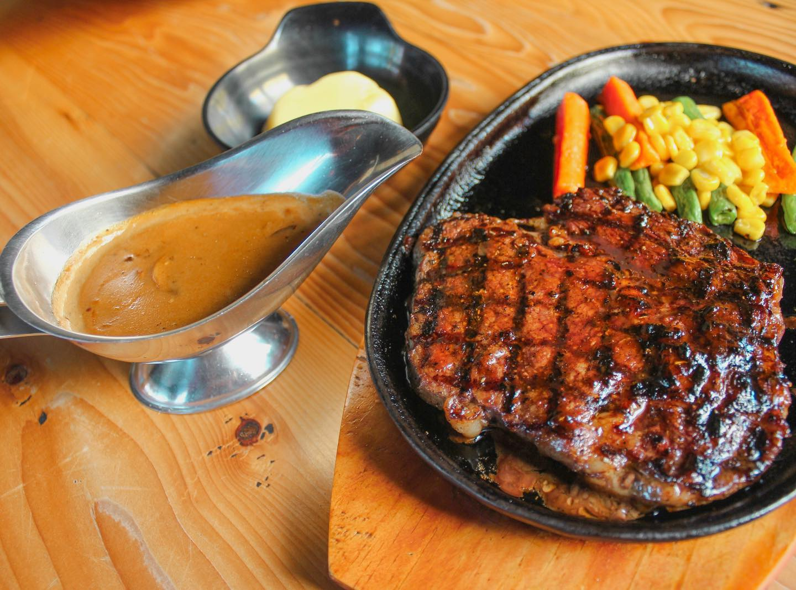
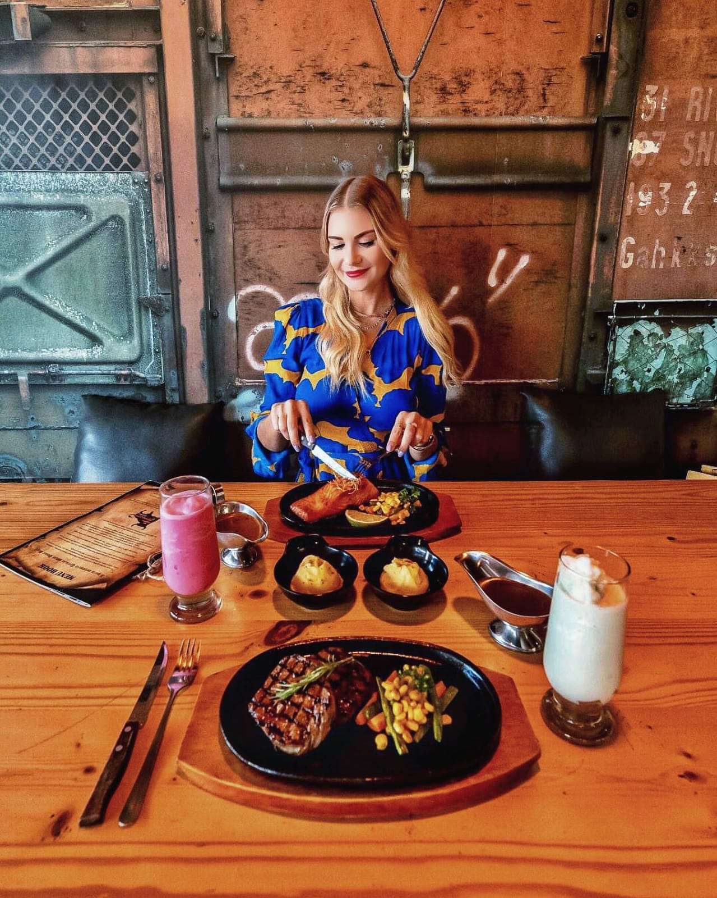
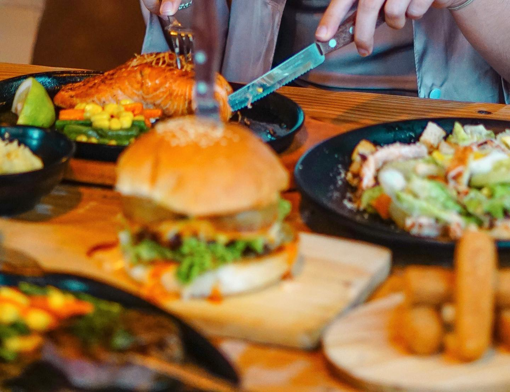
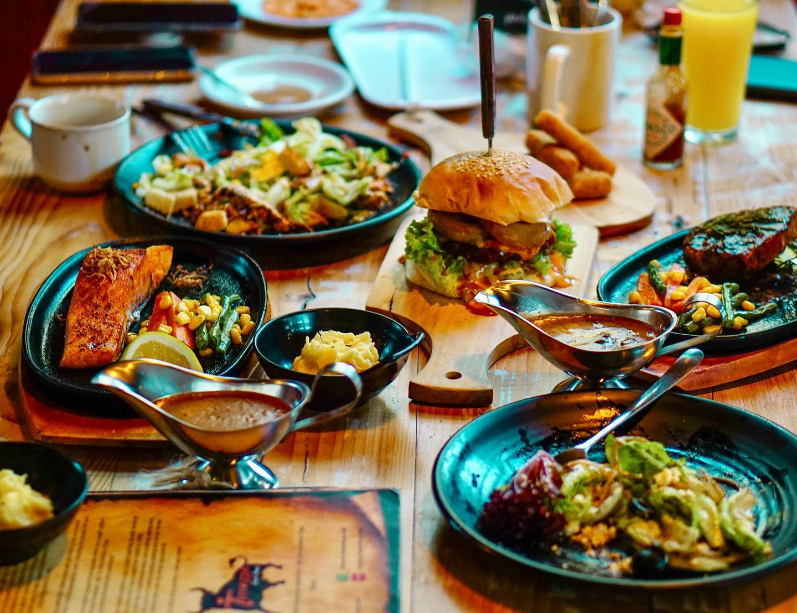
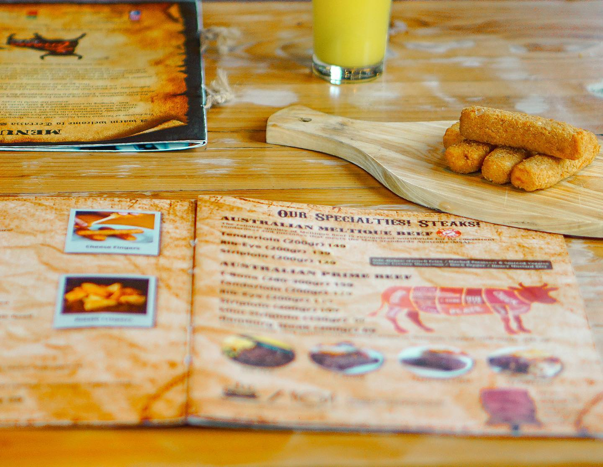
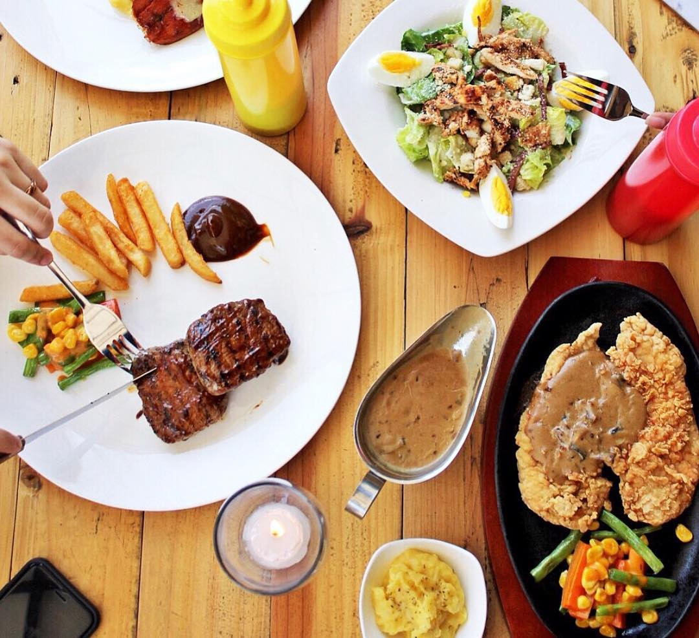
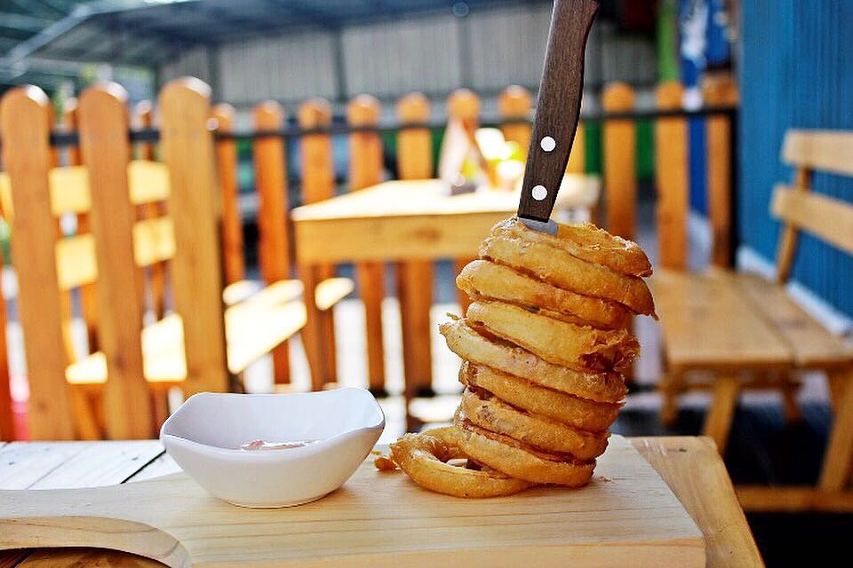
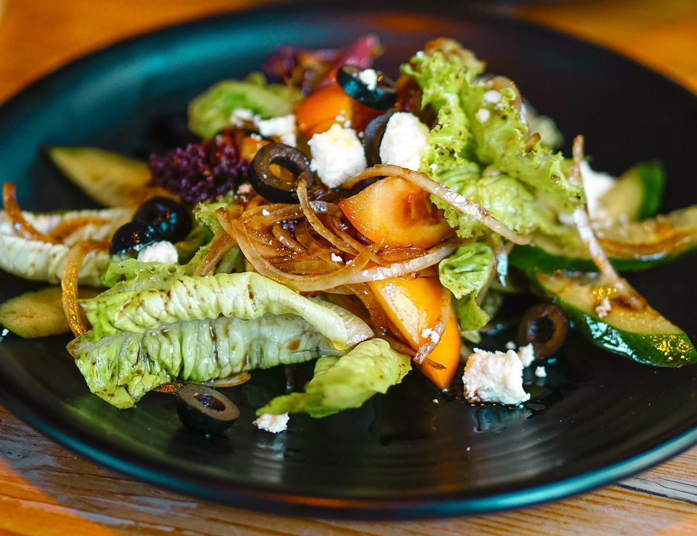
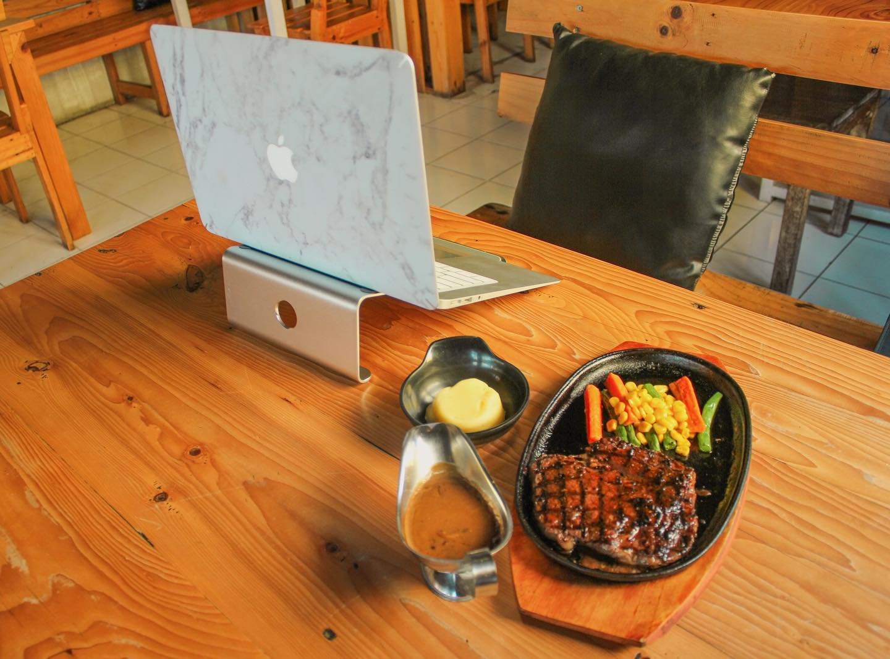
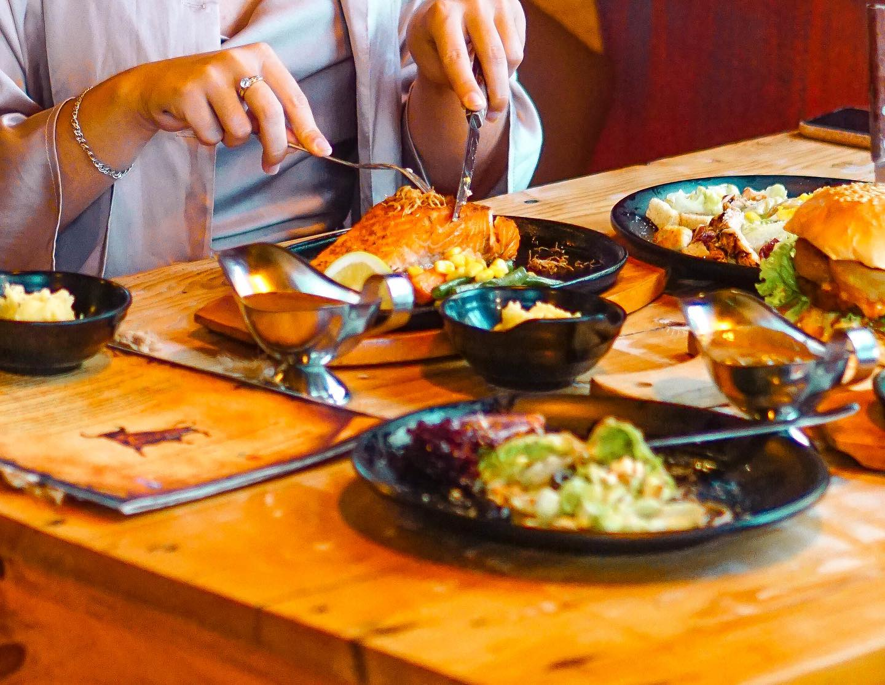

Signature Cuts
Pilihan Favorit Koki Kami

Pengalaman kuliner daging premium terbaik di Pontianak. Menyatukan kualitas bahan baku impor dengan teknik memasak tingkat tinggi.
Di Terrazza Steak House, setiap hidangan adalah mahakarya. Kami percaya bahwa bersantap di tingkat fine-dining bukan sekadar tentang cita rasa yang absolut — ini tentang kehangatan sambutan, estetika presentasi, dan kenangan eksklusif.
Pilihan Favorit Koki Kami









